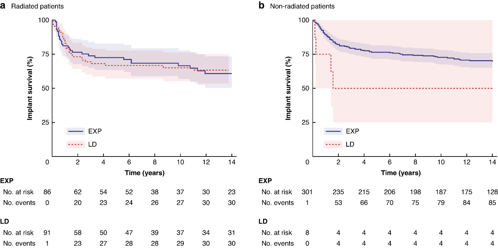
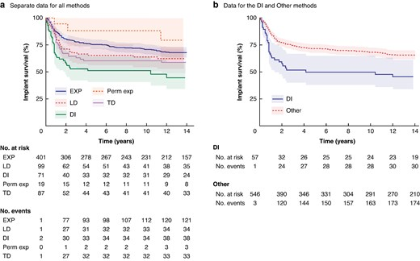
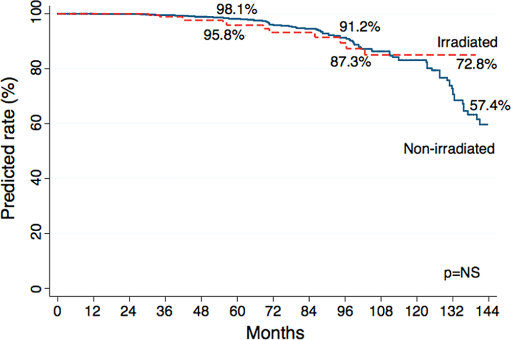
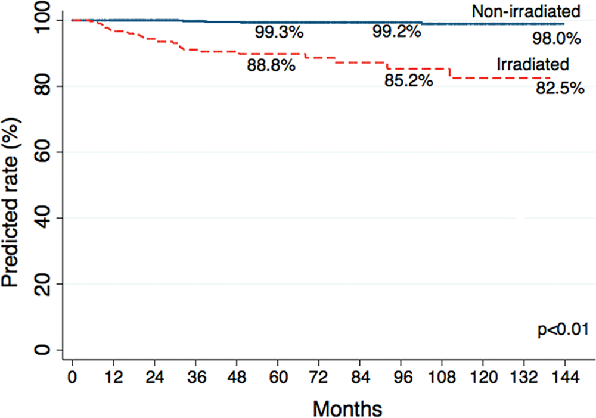
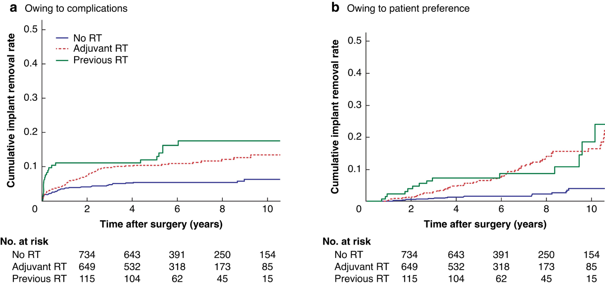
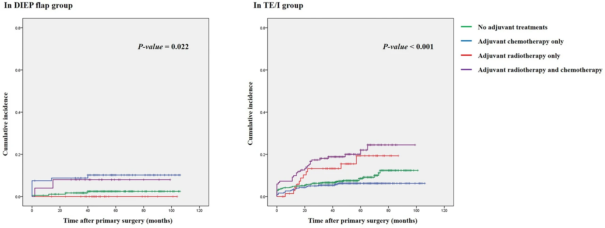
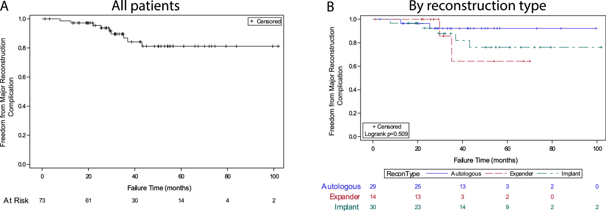

- Long-term implant survival in delayed breast reconstruction
https://academic.oup.com/bjsopen/article/9/4/zraf071/8186087?login=false
For example: 

- https://pubmed.ncbi.nlm.nih.gov/25357021/


- https://academic.oup.com/bjs/article/109/11/1107/6659950
Long-term outcomes of implant-based immediate breast reconstruction with and without radiotherapy

- Longitudinal analysis of long-term outcomes of abdominal flap-based microsurgical reconstruction and two-stage prosthetic reconstruction

- Breast reconstruction complications after postmastectomy proton radiation
https://www.advancesradonc.org/article/S2452-1094(23)00213-0/fulltext